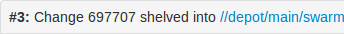
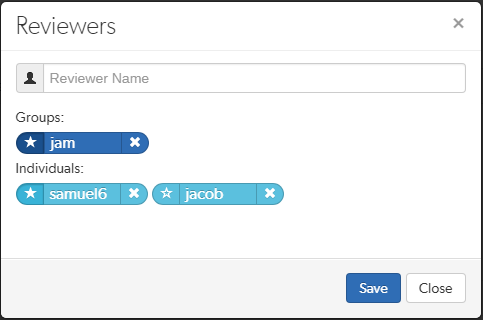

Open topic with navigation
Activities
This section describes the major activities that affect code reviews, including starting a review, updating a review, and fetching a review's files.
Start a review
To start a code review, choose one of the following approaches:
Important
If your Helix server is configured as a commit-edge deployment, and your normal connection is to an edge server, Swarm refuses to start reviews for shelved changes that have not been promoted to the commit server.
Within Swarm, this means that the Request Review button does not appear for unpromoted shelved changes. Outside of Swarm, attempts to start reviews for unpromoted shelved changelists appear to do nothing. Ask your Helix server administrator for assistance if you cannot start a review.
An administrator of the Helix server can automatically promote shelved changes to the commit server by setting the configurable dm.shelve.promote to 1.
- When you use Swarm to view a shelved or submitted changelist, click the Request Review button to request a review of that changelist.
- Requesting a review on a shelved changelist uses the pre-commit model and requesting a review on a submitted changelist uses the post-commit model.
Note
To view a shelved or submitted changelist, use a Quick URL. For example, if your change is 54321, visit the URL: https://myswarm.url/54321
-
When you are about to shelve or submit files:
-
Include #review within your changelist (separated from other text with whitespace, or on a separate line).
Once the review begins, Swarm replaces #review with #review-12345, where 12345 is the review's identifier.
Note
The #review keyword is customizable. For details, see Review keyword.
- At this time, you can add reviewers to the code review by using @mention for users, and @@mention for groups in the changelist description for each desired reviewer.
If your @mention or @@mention includes an asterisk (*) before the userid or groupid, for example @*userid, that user or all of the group members become required reviewers. If your @@mention includes an exclamation mark (!) before the groupid, for example @@!groupid, the members of that group become required reviewers but only one member of the group is required to vote. See Required reviewers for details.
- Complete your shelve or submit operation.
Warning
If you shelve a changelist and subsequently edit the description to include #review, a review is not started. You must re-shelve the files after adding #review.
Tip
You can also start a Swarm review with P4V, P4VS, and P4Eclipse. See below for details:
-
When you are using , you can start a review by pushing your changes to a target branch using the following command:
$ git push origin task1:review/master/new
task1 is the name of the current Git task branch, and master is the target branch that the proposed changes are intended for.
When the command completes, the output indicates the review id that has been created:
remote: Perforce: Swarm review assigned: review/master/1234
where 1234 is the review id that was just created.
For more information on Git Fusion, see the Git Fusion Guide.
Note
If you are using P4V and its Swarm integration, and you encounter the error Host requires authentication, ask your Helix Versioning Engine administrator for assistance. See P4V Authentication for details.
Update a review
To update a code review, use one of the following approaches:
-
For a pre-commit review that you authored:
- Edit the files
- Shelve the files
You can repeat these steps as many times as necessary.
-
For a post-commit review, or a review where you are not the author:
- Fetch the review's files into a new changelist
- Edit the files
- Update the changelist's description to include
#review-12345 (separated from other text with whitespace, or on a separate line)
- Shelve the changelist's files
Once these steps are complete, further updates involve editing the files, and then shelving the changelist's files.
Warning
If you use an invalid review identifier, it will appear that nothing happens. Swarm is currently unable to notify you of this situation.
-
When you are working with :
Important
You can only update Git Fusion-initiated reviews using Git Fusion.
In the following example, the current Git task branch is task1, the target branch is master, the review id is 1234, the Git Fusion hostname is gfserver, and the remote repo name is p4gf_repo.
-
Fetch the review's head version:
$ git fetch --prune origin
From gfserver:p4gf_repo
* [new_branch] review/master/1234 -> origin/review/master/1234
x [deleted] (none) -> origin/review/dev/new
The --prune option lets the local Git repo delete the unwanted review/master/new reference created by the initial git push origin task1:review/master/new command.
-
Check out the review's head version:
$ git checkout review/master/1234
- Edit the files as required.
-
Add the edited files to the index of files, in preparation for the next commit.
There are several ways to do this. For example, to add all modified files to the index, run:
$ git add -A
-
Commit the files in Git:
$ git commit -m "made some changes"
-
Push the Git changes to the review:
$ git push origin review/master/1234
Note
If you get review feedback that is better expressed as a Git rebase and cleaned up history, you can make your changes and push them as a new review.
You cannot clean up history and then push your changes to the same review.
For more information on Git Fusion, see the Git Fusion Guide.
Fetch a review's files
First, determine the changelist containing the review's files:
- Visit the review's page.
-
The current review version's changelist appears in the file list heading:

In this example, the changelist is 697707. You use the identified changelist in place of shelved changelist below.
- Decide whether you will use p4, P4V, or Git Fusion to fetch the files, and follow the instructions in the appropriate section below.
Using P4
-
For a shelved changelist, use a command-line shell and type:
$ p4 unshelve -s shelved changelist
-
For a committed changelist, use a command-line shell and type:
$ p4 sync @committed changelist
Note
Your client's view mappings need to include the changelist's path.
Using P4V
For a shelved changelist:
- Select Search > Go To.
- Change the select box to Pending Changelist.
- Type in the shelved changelist number and click OK.
- Select the files in the Shelved Files area.
- Right-click and select Unshelve.
- Click Unshelve.
For a committed changelist:
- Select Search > Go To.
- Change the select box to Submitted Changelist.
- Type in the submitted changelist number and click OK.
- Select the files in the Files area.
- Right-click and select Get this Revision.
- Click Close.
Using Git Fusion
In the following example, the current local task branch is task1, the target branch is master, the review id is 1234, the Git Fusion hostname is gfserver, and the remote repo name is p4gf_repo.
-
Fetch the review's head version:
$ git fetch --prune origin
From gfserver:p4gf_repo
* [new_branch] review/master/1234 -> origin/review/master/1234
x [deleted] (none) -> origin/review/dev/new
The --prune option lets the local Git repo delete the unwanted review/master/new reference created by the initial git push origin task1:review/master/new command.
-
Check out the review's head version:
$ git checkout review/master/1234
Important
You can only update Git Fusion-initiated reviews using Git Fusion.
For more information on Git Fusion, see the Git Fusion Guide.
Edit reviewers
A review author, or users with admin or super privileges are always able to edit the reviewers for a review. Reviewers are always able to join or leave reviews, or to change whether their vote is required or optional.
Additionally, the following individuals may edit reviewers:
- If the review is moderated, the moderators.
- If the review is part of a project, but not moderated, all project members.
- If the review is not part of a project, any authenticated user.
To edit reviewers for a review:
- Navigate to a review.
- Click the edit reviewers button
 , which appears just to the left of reviewer avatars.
, which appears just to the left of reviewer avatars.The Reviewers dialog is displayed.

-
Add or remove reviewers, or change the vote requirement.
Use the reviewer search field to find users and groups by name, userid, groupid. The field auto-completes as you type, click on the user or group to add to the review.
- Groups: click the star icon to the left of the groupid , and select whether the group is a required reviewer (one vote), a required reviewer (all votes), or an optional reviewer. A solid star means that all group member votes are required to approve a review, a solid star with a 1 inside means at least one group member must vote up and no group members vote down to approve a review, and the outlined star means that the group vote is optional.
- Users: click the star icon to the left of the userid to toggle whether their vote is required or not. A solid star means that their vote is required to approve a review, whereas the outlined star means that their vote is optional.
Click the X icon to the right of the userid or groupid to remove that reviewer from the review.
- Click the Save button to save any changes made.